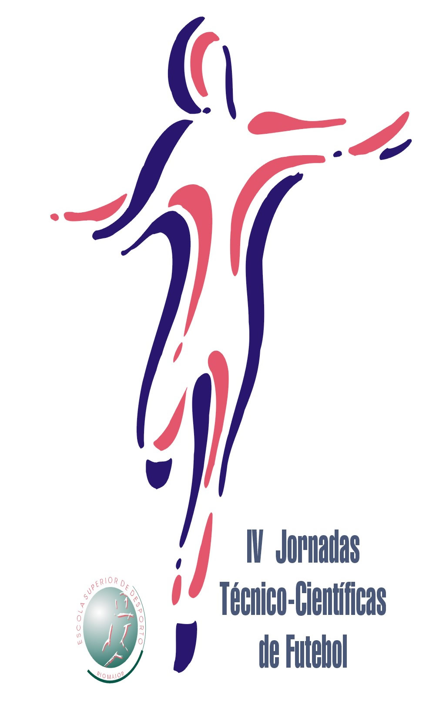
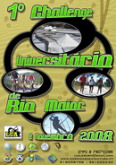
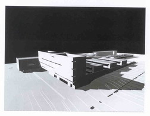
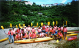
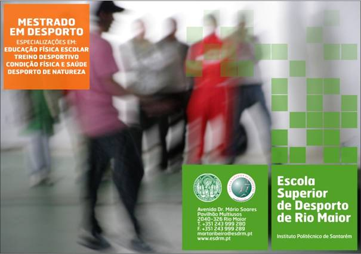
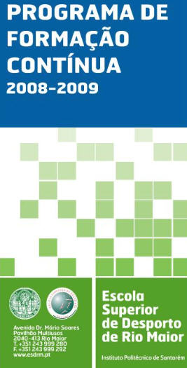

|

|
IV JORNADAS TÉCNICO-CIENTÍFICAS DE FUTEBOL DA ESDRM
3 e 4 Novembro 2008 Evento dirigido a todos os treinadores ou futuros treinadores de Futebol, centrado no tema
“Ser Treinador”, onde estarão presentes um painel de prelectores de elevadíssima qualidade e de elevado reconhecimento
profissional
Ver Apresentação e Ficha de Inscrição
|
| |
|
|

|
1º Challenge Universitário de Rio Maior - 8 de Novembro de 2008
É uma actividade de orientação, em plena natureza, utilizando principalmente três meios de
progressão não motorizados – Corrida, BTT e Canoagem, na qual o trajecto percorrido pelos atletas
dependerá das suas opções estratégicas.
Realizada no âmbito da Liga Universitária de Corridas de Aventura, da Federação Portuguesa
de Orientação ...
Ver Cartaz,
Ficha de Inscrição e
Regulamento
|
| |
|
|

|
As Instalações definitivas da ESDRM estão inscritas no Orçamento de Estado (PIDDAC) para 2009, período entre 2009 e 2011.
O Ministério da Ciência Tecnologia e Ensino Superior colocou os edifícios de ensino, residência de estudantes, cantina,
infra-estruturas e arranjos exteriores da Escola Superior de Desporto de Rio Maior, como estruturas prioritárias para a
qualificação da rede nacional do ensino superior, bem como para os objectivos da política pública do ensino superior.
Ver http://www.parlamento.pt/... pág. 257 |
| |
|
| 
|
Seminário de Pedagogia do Desporto
Dias 7 e 8 Novembro 2008, Cine-Teatro de Rio Maior
Organização Escola Superior de Desporto de Rio Maior - Grupo de Investigação em Pedagogia do Desporto (GIPD)
Apoios: Câmara Municipal de Rio Maior e CIDESD - Centro de Investigação em Desporto, Saúde e Desenvolvimento Humano
Ver Apresentação e Ficha de Inscrição |
| |
|
|

|
Mestrado em Desporto - 2º Fase de Candidaturas
Ano Lectivo 2008/09
Especializações em : Condição Física e Saúde; Desporto de Natureza; Educação Física Escolar e Treino Desportivo...
Classificação dos candidatos |
| |
|
O concurso de ideias, no âmbito do modelo Poliempreende, iniciará
brevemente o prazo de apresentação de candidaturas a projectos originais,
dirigidos a estudantes, diplomados e docentes. Para mais informações
contactar o Coordenador do Poliempreende da ESDRM - professor
Diogo Carmo.
|
| |
|
|
|
| |
|
Matrículas Ano Lectivo 2008-2009
Matrículas 1.º
Ano / 1.ª Vez, de 15 a 19 de Setembro de 2008
Matrículas anos seguintes, de 15 a 25 de Setembro de 2008
Horário de atendimento das 10 às 16h
|
| |
|
| 
|
Formação Contínua 2008-2009
O programa da formação contínua pretende responder às necessidades de
aquisição e actualização de conhecimentos e
competências ...
|